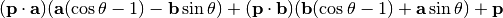
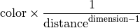
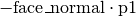

The names render.Color, render.Material, render.Channel, render.ImageFormat, render.CallbackRenderer, render.BlockingRenderer, wrapper.NTracer, wrapper.CUBE, wrapper.SPHERE and kdtree_builder.build_composite_scene() are imported here for convenience.
A synchronous scene renderer.
By default, this class uses as many threads are the are processing cores. The scene can be drawn on any writable object supporting the buffer protocol. signal_abort() can be called from another thread to quit drawing early.
| Parameters: | threads (integer) – The number of threads to use in addition to the thread from which it’s called. If -1, the number of extra threads will be one minus the number of processing cores of the machine. |
|---|
Signal for the renderer to quit and return immediately.
If the renderer isn’t running, this does nothing.
Render scene onto dest.
If the renderer is already running on another thread, an exception is thrown instead. Upon starting, the scene will be locked for writing.
The return value will be True unless the renderer quit before finishing because of a call to signal_abort(), in which case the return value will be False.
| Parameters: |
|
|---|
An asynchronous scene renderer.
By default, this class uses as many threads are the are processing cores. The scene can be drawn on any writable object supporting the buffer protocol (such as bytearray) and a callback function is invoked when finished.
| Parameters: | threads (integer) – The number of threads to use. If zero, the number of threads will equal the number of processing cores of the machine. |
|---|
Signal for the renderer to quit and wait until all drawing has stopped and the scene has been unlocked.
The callback function passed to begin_render() will not be called if the renderer doesn’t finish drawing.
If the renderer isn’t running, this does nothing.
Begin rendering scene onto dest.
If the renderer is already running, an exception is thrown instead. Upon starting, the scene will be locked for writing.
| Parameters: |
|
|---|
A representation of a color channel.
This is used by ImageFormat to specify how pixels are stored.
All colors are computed internally using three 32-bit floating point numbers, representing red, green and blue. An instance of Channel specifies how to convert a color to a component of the destination format. For a given color “c”, the output will be f_r*c.r + f_g*c.g + f_b*c.b + f_c and is clamped between 0 and 1. If tfloat is false, the value is multiplied by 2bit_size−1 and converted to an integer.
Instances of this class are read-only.
| Parameters: |
|
|---|
The number of bits the channel takes up.
The red factor.
The green factor.
The blue factor.
A constant to add.
Whether the channel is stored as an integer or floating point number.
The channels of an ImageFormat object.
This class can not be instantiated directly in Python code.
self.__getitem__(i) <==> self[i]
self.__len__() <==> len(self)
A red-green-blue triplet specifying a color.
For each component, zero represents its minimum value and one represents its maximum value. Therefore, Color(0,0,0) represents black, Color(1,1,1) represents white and Color(0,0,0.5) represents dark blue.
Although values outside of 0-1 are allowed, they are clipped to the normal range when finally drawn. Such values will, however, affect how reflections and transparency are calculated.
Instances of this class are read-only.
| Parameters: |
|
|---|
Red component
Green component
Blue component
The dimensions and pixel format of an image.
The pixel format is specified by one or more instances of Channel. Each channel describes how to convert a red-green-blue triplet into the associated pixel component and has a bit size. When drawing a pixel, a renderer will write each component, one after the other without leaving any gaps. However, each pixel will start on a new byte. If the last byte is not completely covered by the channels, the remaining bits will be set to zero.
The size of a pixel may not exceed 16 bytes (128 bits).
Some examples of pixel formats and their associated channel sequences:
| 24-bit RGB | [Channel(8,1,0,0), Channel(8,0,1,0), Channel(8,0,0,1)] |
| 32-bit RGBA with full alpha | [Channel(8,1,0,0), Channel(8,0,1,0), Channel(8,0,0,1), Channel(8,0,0,0,1)] |
| 16-bit 5-5-5 RGB (the last bit is unused) | [Channel(5,1,0,0), Channel(5,0,1,0), Channel(5,0,0,1)] |
| 16-bit 5-6-5 RGB | [Channel(5,1,0,0), Channel(6,0,1,0), Channel(5,0,0,1)] |
| the native internal representation | [Channel(32,1,0,0,0,True), Channel(32,0,1,0,0,True), Channel(32,0,0,1,0,True)] |
| digital YCRCB (ITU-R BT.601 conversion) | [Channel(8,0.299,0.587,0.114,0.0625), Channel(8,-0.147,-0.289,0.436,0.5), Channel(8,0.615,-0.515,-0.1,0.5)] |
| 16-bit brightness only | [Channel(16,0.299,0.587,0.114)] |
| Parameters: |
|
|---|
Replace the contents of channels.
| Parameters: | channels – An iterable containing one or more instances of Channel, describing the bit layout of a pixel. |
|---|
The width of the image in pixels.
The height of the image in pixels.
An read-only list-like object containing one or more instances of Channel, describing the bit layout of a pixel.
The number of bytes per row.
If true, the bytes of each pixel will be written in reverse order (like a little-endian word).
The byte size of one pixel.
This is the sum of the bit sizes of the channels, rounded up.
Specifies how light will interact with a primitive.
| Parameters: |
|
|---|
The diffuse color of the object.
A value between 0 and 1 specifying transparency.
0 mean completely transparent. 1 means completely opaque.
A value between 0 and 1 specifying reflectivity.
0 means does not reflect at all. 1 means 100% reflective. The color of the reflection is multiplied by color, thus if color is (1,0,0), the reflection will always be in shades of red.
A value between 0 and 1 specifying the maximum intensity of the specular highlight.
A value greater than 0 specifying the sharpness of the specular highlight.
The higher the value, the smaller the highlight will be. A value of 0 would cause the specular highlight to cover the entire surface of the object at maximum intensity.
The color of the specular highlight.
A scene that Renderer can render.
Although not exposed to Python code, the scene class has a concept of locking. While a renderer is drawing a scene, the scene is locked. While locked, a scene cannot be modified. Attempting to do so will raise an exception.
This cannot be instantiated in Python code, not even as a base class.
The ray-tracing and geometry code and objects.
You are unlikely to need to import this module directly. It will be loaded by wrapper.NTracer, which offers a more convenient interface.
Every function that takes a vector, can in addition to taking a Vector object, take a tuple of numbers or a matrix row (MatrixProxy). This however does not apply to operators (e.g. you can’t add a tuple and a Vector together).
An axis-aligned bounding box.
This is not a displayable primitive, but is instead meant for spacial partitioning of the primitives. This is used by kdtree_builder.
| Parameters: |
|
|---|
Returns True if the box intersects the given object.
The object is only considered intersecting if some part of it is inside the box. Merely touching the box does not count.
| Parameters: | primitive – The object to test intersection with. It must be an instance of PrimitivePrototype, not Primitive. |
|---|
Returns True if the box intersects the given simplex, ignoring one axis.
This method is identical to intersects() except it only accepts instances of TrianglePrototype and it disregards the axis skip. This is equivalent to testing against a simplex that has been extruded infinitely far in the positive and negative directions along that axis. The simplex must be flat along that axis (i.e. primitive.aabb_min[skip] == primitive.aabb_max[skip] must be true) for the return value to be correct.
This method is needed when a simplex is completely embedded in a split hyperplane and thus would fail the normal intersection test with any bounding box that the hyperplane divides.
| Parameters: |
|
|---|
Returns the lower part of this box split at split, along axis axis.
Equivalent to: AABB(self.start,self.end.set_c(axis,split))
| Parameters: |
|
|---|
Returns the upper part of this box split at split, along axis axis.
Equivalent to: AABB(self.start.set_c(axis,split),self.end)
| Parameters: |
|
|---|
The dimension of the box.
A vector specifying the minimum extent of the box.
A vector specifying the maximum extent of the box.
Bases: render.Scene
A very simple scene containing one hypercube.
The hypercube is centered at the origin and has a width of 2 along every axis. It’s not much to look at but it renders really fast.
| Parameters: | dimension (integer) – The dimension of the scene. |
|---|
Return a copy of the scene’s camera.
Set the scene’s camera to a copy of the provided value.
If the scene has been locked by a render.Renderer, this function will raise an exception instead.
Set the field of vision.
If the scene has been locked by a render.Renderer, this function will raise an exception instead.
| Parameters: | fov – The new field of vision in radians. |
|---|
The scene’s horizontal field of vision in radians.
This attribute is read-only. To modify the value, use set_fov().
A boolean specifying whether or not the scene is locked.
This attribute cannot be modified in Python code.
A “camera” that maintains a local set of axes.
Note that the classes that depend on this expect the axes to be orthogonal and unit, but this is not enforced. If, for example, you rotate one axis, you will need to rotate the others the same way. The method normalize() is provided to correct small deviations.
When rendering a scene, only the order of the first three axes matter. The first points right, the second up, and the third forward. Rays are cast from the origin of the camera onto a 2-dimensional image, forming a 3-dimension frustum.
| Parameters: | dimension (integer) – The dimension of the camera. |
|---|
Adjust the values in axes so that every value is a unit vector and is orthogonal to each other.
The limited precision in floating point values means that every time the axes are transformed, they may deviate slightly in length and from being orthogonal. If multiple transformations are applied, the deviation can accumulate and become noticeable. This method will correct any deviation as long as all the axes remain linearly independent (otherwise the effect is undefined).
Move the camera using the local coordinate space.
Given camera c, this is equivalent to for i in range(c.dimension): c.origin += c.axes[i] * offset[i].
| Parameters: | offset (vector) – |
|---|
Rotate the camera using matrix m.
A sequence of vectors specifying the axes.
The dimension of the camera.
A vector specifying the location of the camera.
The axes of a Camera object.
This class can not be instantiated directly in Python code.
self.__getitem__(i) <==> self[i]
self.__len__() <==> len(self)
self.__setitem__(i,v) <==> self[i]=v
Bases: render.Scene
A scene that displays the contents of a k-d tree.
You normally don’t need to create this object directly, but instead call kdtree_builder.build_composite_scene().
| Parameters: |
|
|---|
Add a light to the scene.
The light will be added to global_lights or point_lights according to its type.
If the scene has been locked by a render.Renderer, this method will raise an exception instead.
| Parameters: | light – An instance of GlobalLight or PointLight. |
|---|
Return a copy of the scene’s camera.
Set the value of ambient_color
If the scene has been locked by a render.Renderer, this method will raise an exception instead.
| Parameters: | color – An instance of render.Color or a tuple with three numbers. |
|---|
Set the scene’s camera to a copy of the provided value.
If the scene has been locked by a render.Renderer, this method will raise an exception instead.
| Parameters: | camera – An instance of Camera. |
|---|
Set the value of camera_light
If the scene has been locked by a render.Renderer, this method will raise an exception instead.
| Parameters: | camera_light (boolean) – The new value. |
|---|
Set the field of vision.
If the scene has been locked by a render.Renderer, this method will raise an exception instead.
| Parameters: | fov (number) – The new field of vision in radians. |
|---|
Set the value of max_reflect_depth.
If the scene has been locked by a render.Renderer, this method will raise an exception instead.
| Parameters: | depth (integer) – The new value. |
|---|
Set the value of shadows
If the scene has been locked by a render.Renderer, this method will raise an exception instead.
| Parameters: | shadows (boolean) – The new value. |
|---|
The maximum extent of the axis-aligned bounding-box that encloses all the primitives of the scene.
This attribute is read-only.
The minimum extent of the axis-aligned bounding-box that encloses all the primitives of the scene.
This attribute is read-only.
The color of the ambient light.
This light reaches all geometry unconditionally.
The default value is Color(0,0,0).
This attribute is read-only. To modify the value, use set_ambient_color().
A boolean specifying whether surfaces will be lit if they face the camera.
This is equivalent to having an instance of GlobalLight with GlobalLight.color set to Color(1,1,1) and GlobalLight.direction set to the direction that the camera is facing, except this light never casts shadows.
The default value is True.
This attribute is read-only. To modify the value, use set_camera_light().
The scene’s horizontal field of vision in radians.
This attribute is read-only. To modify the value, use set_fov().
A list-like object containing intances of GlobalLight.
See GlobalLightList for details.
A boolean specifying whether or not the scene is locked.
This attribute cannot be modified in Python code.
The maximum number of times a ray is allowed to bounce.
The default value is 4.
Recursive reflections require shooting rays multiple times per pixel, thus lower values can improve performance at the cost of image quality. A value of 0 disables reflections altogether.
This attribute is read-only. To modify the value, use set_fov().
A list-like object containing instances of PointLight.
See PointLightList for details.
The root node of a k-d tree.
This attribute is read-only.
A boolean specifying whether objects will cast shadows.
Note: this only applies to lights explicitly added, not the default camera light (see camera_light).
The default value is False.
This attribute is read-only. To modify the value, use set_shadows().
A read-only sequence of vectors.
This class cannot be instantiated directly in Python code.
self.__getitem__(i) <==> self[i]
self.__len__() <==> len(self)
A light whose source is infinitely far from the scene’s origin.
This is an approximation of a distant light source such as the sun.
| Parameters: |
|
|---|
The light’s color.
The direction that the light’s rays travel (i.e. the light source will be located at ).
An array of GlobalLight objects.
An instance of this class is tied to a specific CompositeScene instance. Any attempt to modify an instance of this class while the scene is locked will cause an exception to be raised.
Since the order of lights is not important, when deleting an element, instead of shifting all subsequent elements back, the gap is filled with the last element (unless the last element is the one being deleted).
This class cannot be instantiated directly in Python code.
self.__getitem__(i) <==> self[i]
self.__len__() <==> len(self)
self.__setitem__(i,v) <==> self[i]=v
Add a light.
Add lights from an iterable object.
Bases: KDNode
A k-d tree branch node.
One of left and right may be None, but not both.
| Parameters: |
|---|
The axis that the split hyper-plane is perpendicular to.
The dimension of the branch’s nodes.
The left node (< split) or None.
The right node (>= split) or None.
The location along the axis where the split occurs.
Bases: KDNode
A k-d tree leaf node.
This acts as a container for one or more primitives.
Instances of this class are read-only.
| Parameters: | primitives (iterable) – A sequence of Primitive objects. |
|---|
self.__getitem__(i) <==> self[i]
self.__len__() <==> len(self)
The dimension of the primitives.
A k-d tree node.
This class cannot be instantiated directly in Python code.
Tests whether a given ray intersects.
The return value is a list containing one tuple for every intersection that occured. Multiple intersections can occur when the ray passes through primitives that have an opacity of less than one. Each tuple will contain the distance between origin and the intersection, the point of intersection, the normal of the surface intersected and the intersected primitive itself. If an opaque primitive is intersected, it will always be the last element and have the greatest distance, but every other element will be in an arbitrary order and may contain duplicates (this can happen when a primitive crosses a split pane). If no intersection occurs, the return value will be an empty list.
| Parameters: |
|
|---|
Test if origin + direction*distance is occluded by any primitives.
If an opaque object exists at any point along distance, the return value is (True,None). Otherwise the return value is a tuple containing False and an array that for every non-opaque primitive found along distance, contains a tuple with the distance between origin and the intersection, the point of intersection, the normal of the surface intersected and the intersected primitive itself. The elements will be in an arbitrary order and may contain duplicates (this can happen when a primitive crosses a split pane).
| Parameters: |
|
|---|
A square matrix.
Instances of this class are read-only.
| Parameters: |
|
|---|
self.__getitem__(i) <==> self[i]
The elements of Matrix are its rows.
Returns the number of rows.
This is always equal to dimension.
self.__len__() <==> len(self)
self.__mul__(y) <==> self*y
Compute the determinant of the matrix.
Compute the inverse of the matrix.
If the matrix is singular (cannot be inverted), an exception is thrown.
Return the transpose of the matrix.
Create an identity matrix.
| Parameters: | dimension – The dimension of the new matrix. |
|---|
Create a reflection matrix.
The refection is by a hyperplane perpendicular to axis that passes through the origin.
| Parameters: | axis (vector) – The axis to reflect along. |
|---|
Create a rotation matrix along the plane defined by the linearly-independent vectors: a and b.
The ability to unambiguously describe a plane with one vector is only present in 3-space, thus instead of taking one perpendicular vector, this method takes two coplanar vectors.
The resulting matrix M is such that M * p is equal to:

| Parameters: |
|
|---|
Creates a scale matrix.
This method takes either two numbers or one vector. If numbers are supplied, the numbers must be the dimension of the matrix followed by a magnitude, and the return value will be a uniform scale matrix. If a vector is supplied, a non-uniform scale matrix will be returned, where the vector components will correspond to the scaling factors of each axis.
The dimension of the matrix.
All the matrix elements as a flat sequence
A sequence of matrix values.
This type is returned by Matrix.__getitem__() and Matrix.values.
This class cannot be instantiated directly in Python code.
self.__getitem__(i) <==> self[i]
self.__len__() <==> len(self)
A light source that emits light uniformly in every direction from a given point.
color represents not only the light’s color, but its brightness, too, thus its r g b components may be much greater than 1.
The intensity of the light at a given point depends on the distance from position and is given by the formula:

| Parameters: |
|
|---|
The light’s color multiplied by its brightness.
The position of the light.
An array of PointLight objects.
An instance of this class is tied to a specific CompositeScene instance. Any attempt to modify an instance of this class while the scene is locked will cause an exception to be raised.
Since the order of lights is not important, when deleting an element, instead of shifting all subsequent elements back, the gap is filled with the last element (unless the last element is the one being deleted).
This class cannot be instantiated directly in Python code.
self.__getitem__(i) <==> self[i]
self.__len__() <==> len(self)
self.__setitem__(i,v) <==> self[i]=v
Add a light.
Add lights from an iterable object.
A geometric primitive that can be used to construct scenes for the ray-tracer.
Descendants of this class are used in highly optimized multi-threaded C++ code, thus this class cannot be instantiated directly in Python code, not even as a base class for another class.
Tests whether a given ray intersects.
If the ray intersects with the object, a tuple is returned with the distance between origin and the intersection, the point of intersection and the normal vector of the surface at the intersection. Otherwise, the return value is None.
| Parameters: |
|
|---|
The material of the primitive.
A primitive with extra data needed for quick spacial partitioning.
This class cannot be instantiated directly in Python code.
A vector specifying the maximum extent of the primitive’s axis aligned bounding box.
A vector specifying the minimum extent of the primitive’s axis aligned bounding box.
The material of the primitive.
Bases: Primitive
A non-flat geometric primitive.
It is either a hypercube or a hypersphere.
Instances of this class are read-only.
| Parameters: |
|
|---|
The dimension of the solid.
The inverse of orientation
A transformation matrix applied to the solid.
A vector specifying the position of the solid.
The type of solid: either wrapper.CUBE or wrapper.SPHERE
Bases: PrimitivePrototype
A solid with extra data needed for quick spacial partitioning.
Instances of this class are read-only.
| Parameters: |
|
|---|
The dimension of the solid.
The inverse of orientation
A transformation matrix applied to the solid.
A vector specifying the position of the solid.
The type of solid: either wrapper.CUBE or wrapper.SPHERE.
Bases: Primitive
A simplex of codimension 1.
Note: it is unlikely that you will need to call this constructor directly. It requires very specific values that from_points() can calculate for you.
Despite the name, this is only a triangle in 3-space. Although this serves as an analogue to a triangle. Even with more than 3 dimensions, this shape is always flat. Rays will intersect the body of the simplex and not it’s perimeter/hull.
Instances of this class are read-only.
| Parameters: |
|
|---|
Create a Triangle object from the vertices of the simplex.
| Parameters: |
|
|---|
A value that equals 
This is simply a pre-computed value needed by the ray-tracer.
The dimension of the simplex’s coordinates.
This is always one greater than the dimension of the simplex. It corresponds to the dimension of the space it can occupy.
A vertex of the simplex.
Due to the way the ray-simplex intersection code works, this is the only point that’s kept.
A read-only sequence of TrianglePointDatum instances.
self.__getitem__(i) <==> self[i]
self.__len__() <==> len(self)
Bases: PrimitivePrototype
A simplex with extra data needed for quick spacial partitioning.
Unlike the Triangle class, this keeps the vertices that make up the simplex.
Instances of this class are read-only.
| Parameters: |
|
|---|
Has the same meaning as Triangle.dimension.
A vector class for representing positions and directions.
Instances of this class are read-only.
| Parameters: |
|
|---|
Return the magnitude of the vector.
This is the same as absolute().
self.__abs__() <==> abs(self)
self.__add__(y) <==> self+y
Divide every element of the vector by b.
self.__div__(y) <==> self/y
self.__eq__(y) <==> self==y
self.__getitem__(i) <==> self[i]
Multiply every element of the vector with b.
This is only for scalar products. For vector products, see dot() and cross().
self.__mul__(y) <==> self*y
self.__ne__(y) <==> self!=y
self.__neg__() <==> -self
self.__repr__() <==> repr(self)
self.__str__() <==> str(self)
self.__sub__(y) <==> self-y
Return a vector with the given function applied to each value.
Equivalent to: Vector(self.dimension,map(f,self))
| Parameters: | f – A function or callable object that takes one number and returns a number. |
|---|
Return a copy of the vector with the index‘th item replaced with value.
Return the magnitude squared of the vector.
Equivalent to: dot(self,self)
Return the corresponding unit vector.
Equivalent to: self / self.absolute()
Create an axis vector.
Every element of the vector will be zero, except the element at axis, which will be length.
The dimension of the vector.
A generalized cross product.
| Parameters: | vectors – A sequence of linearly independent vectors. The number of vectors must be one less than their dimension. |
|---|
Compute the dot product of two vectors.
Create a scene from a sequence of tracern.PrimitivePrototype instances.
| Parameters: |
|
|---|---|
| Return type: |
Create a k-d tree from a sequence of tracern.PrimitivePrototype instances.
The return value is a tuple containing two vectors followed by the root node of k-d tree (instance of tracern.KDNode). The vectors are the minimum followed by the maximum point of an axis-aligned bounding box enclosing all the primitives from primitives. The tuple’s values can be passed directly to tracern.CompositeScene which is exactly what build_composite_scene() does.
| Parameters: |
|
|---|---|
| Return type: | tuple |
A helper class that simplifies the creation of multiple objects with the same dimension.
An instance contains all the same values that tracern has, except every class that has a method with a dimension parameter is subclassed so that parameter is filled in automatically. Additionally, the constructors for tracern.Vector and tracern.Matrix are modified to accept multiple parameters as an alternative to a sequence of values. e.g.: NTracer(3).Vector([1,2,3]) can also be written as NTracer(3).Vector(1,2,3).
An instance of NTracer imports from a specialized (read: faster) tracer{dimension} version if it exists, and falls back to tracern otherwise.
Instances of NTracer are cached, so invoking NTracer while another instance with the same dimension already exists, will simply give you the first instance (unless force_generic is given a value of True).
| Parameters: |
|
|---|
A constant that can be passed to tracern.Solid‘s constructor to create a hypercube.
A constant that can be passed to tracern.Solid‘s constructor to create a hypersphere.
Bases: render.CallbackRenderer
A renderer for Pygame surfaces.
The scene is drawn onto a pygame.Surface object and upon completion, sends a Pygame event of type ON_COMPLETE with a source attribute set to the instance of the renderer, and surface and scene attributes with the surface and scene that were passed to begin_render().
Note: the renderer does not honor clipping areas or subsurface boundaries (it will always draw onto the entire surface) and indexed color modes (all 8-bit color modes are indexed) are not supported.
| Parameters: | threads (integer) – The number of threads to use. If zero, the number of threads will equal the number of processing cores of the machine. |
|---|
Begin rendering scene onto dest.
If the renderer is already running, an exception is thrown instead. Upon starting, the scene will be locked for writing.
| Parameters: |
|
|---|
The Pygame event type that will be sent when rendering is finished.
This is set to pygame.USEREVENT initially, but can be set to any value between pygame.USEREVENT and pygame.NUMEVENTS to avoid conflicts with other producers of events.
Create a list of render.Channel objects that match the pixel format of surface.
Note: indexed color modes (all 8-bit color modes are indexed) are not supported.
| Parameters: | surface – An instance of pygame.Surface. |
|---|
Depending on how this package was built, there will be one or more modules that start with “tracer” and end in a number (by default, one for every number between 3 and 8). These have an interface identical to tracern, including the dimension parameter of certain functions, but are specialized for the dimensionality corresponding to the number in its name. For functions that require a dimension parameter, passing a number other than the one its specialized for, will raise an exception.
By only supporting a single dimensionality, these specialized modules avoid the looping and heap-allocation that the generic version requires and thus perform significantly faster.
To save space, the modules corresponding to dimensionalities you don’t need, or even all the specialized modules, can be deleted with no loss of functionality. This package can also work without the generic version, using only specialized versions, but you would only be able to use those particular dimensionalities.
Note that equivalent types between the generic and specific versions are not compatible with each other (e.g. an instance tracern.Vector cannot be added to an instance of tracer3.Vector even if they have the same dimension), however, they are interchangeable in the other modules (e.g. kdtree_builder.build_composite_scene() is documented as taking instances of tracern.PrimitivePrototype, but it will accept instances of tracer3.PrimitivePrototype just as well).